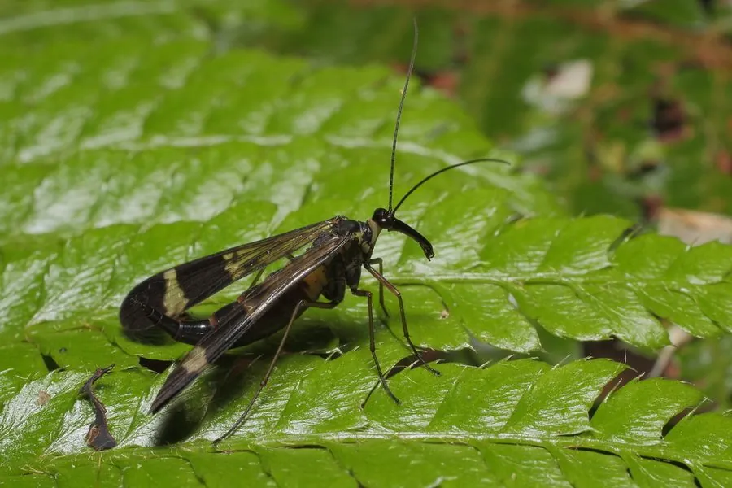

昆虫 · 动物界
蝎蛉 Panorpa japonica

雄性腹部末端膨大上弯、形似蝎尾的长翅目昆虫，生活在阴湿的林下，成虫捕食小虫，也吃腐殖质和花蜜。
- 分类
- 门节肢动物门纲昆虫纲目长翅目科蝎蛉科属蝎蛉属
- 栖息环境
- 阴湿的林地、溪谷和灌丛，常在落叶层和水边活动
- 地理分布
- 东亚地区，中国多地有分布
- 保护级别
- 暂无评估
物种志
蝎蛉成虫体长 15–20 mm，体色黄褐或黑褐，翅面有黑色斑纹；头部向前延长成喙状。雄性腹部末端膨大并向上弯曲，形似蝎子的尾巴，因此得名“蝎蛉”，不过这个“蝎尾”并不会蜇人。
蝎蛉分布于东亚，中国多地有记录，栖息于阴湿的林地、溪谷和灌丛。成虫杂食，捕食小型昆虫，也取食腐殖质、花粉和花蜜。雄性会用“蝎尾”和分泌物吸引雌性，交配时还会献上一只猎物作为“礼物”，雌性则根据猎物大小决定是否接受。幼虫生活在潮湿的土壤中，取食腐殖质和小型无脊椎动物。蝎蛉对湿度要求较高，是阴湿林下环境的常见昆虫。目前它没有IUCN 的正式评估，中国未将其列入国家重点保护野生动物名录。
形态与习性
- 食性杂食，捕食小型昆虫，也取食腐殖质、花粉和花蜜
- 体长15–20 mm
- 形态雄性腹部末端膨大上弯，形似蝎尾
- 栖息地阴湿的林地、溪谷和灌丛
- 繁殖雄性以猎物作为求偶“礼物”献给雌性
- 幼虫生活在潮湿土壤中，取食腐殖质和小型无脊椎动物
趣味知识
- 蝎蛉的“蝎尾”其实是雄性膨大的腹部末端，并不会蜇人。
- 雄蝎蛉交配时会给雌性送上一只猎物作为“礼物”。
- 蝎蛉喜欢阴湿的林下环境，常在水边和落叶层活动。